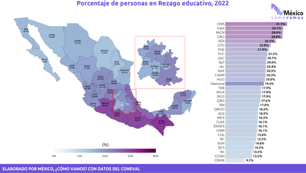
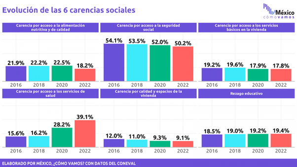

Fuentes de Consulta
En esta sección, encontrarás enlaces, artículos, imágenes y vídeos relevantes para profundizar sobre las políticas educativas de cada presidente.
Andrés Manuel López Obrador
- Conoce más sobre la integración del Plan Nacional de Desarrollo 2019-2024
- Educación Superior en México: los retos del gobierno presidencial en el periodo 2018-2024 en materia de cobertura
- Indicadores nacionales de la mejora continua de la educación en México. Cifras del ciclo escolar 2021-2022 (Edición 2023)
- 
- 